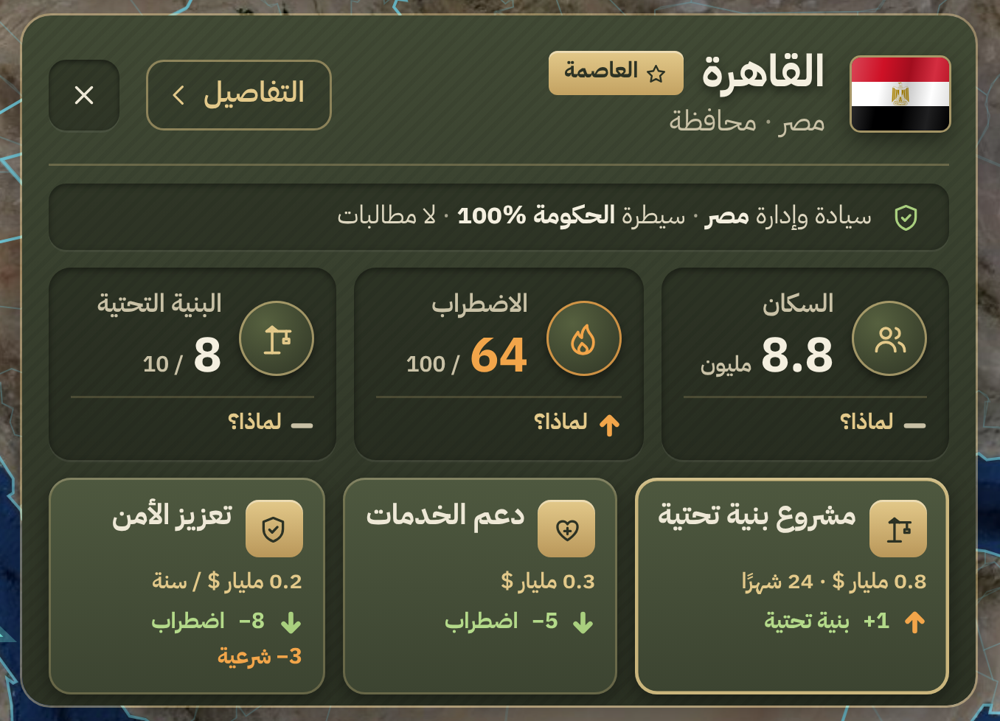
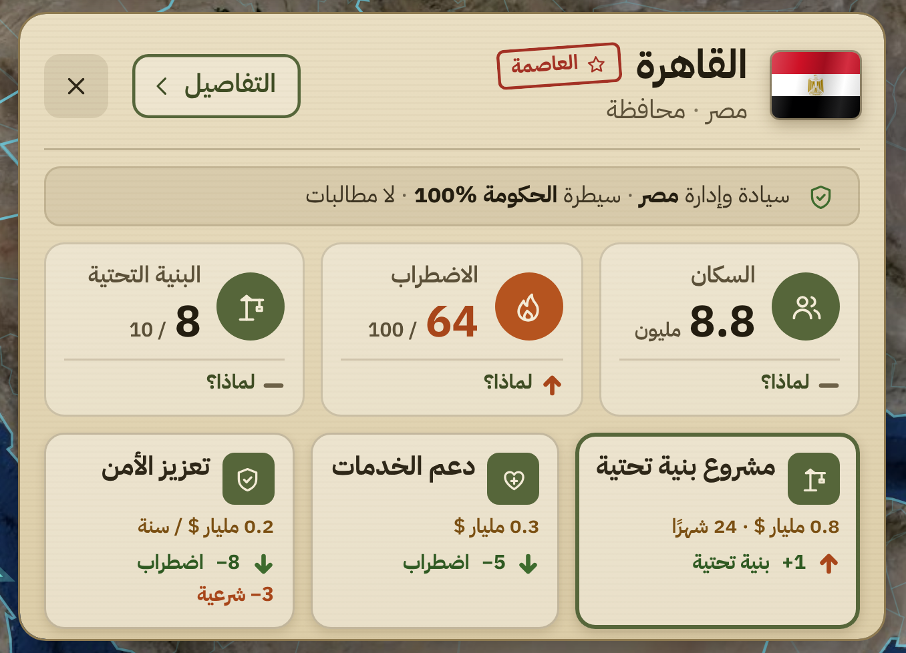

لوحة المحافظة: النسخة الجديدة
أكبر · أقل زحمة · بروح لعبة واقعية · الألوان الجديدة في اللوحات بس، والباقي مثل ما اعتمدته
ق1. زيتوني عسكريأخضر زيتوني مع نحاسي ذهبي، مثل معدات الجيش
ق2. رمليلوحة فاتحة بلون الرمل وكتابة بنية، مثل الملف العسكري الورقي
على الشاشة كاملة